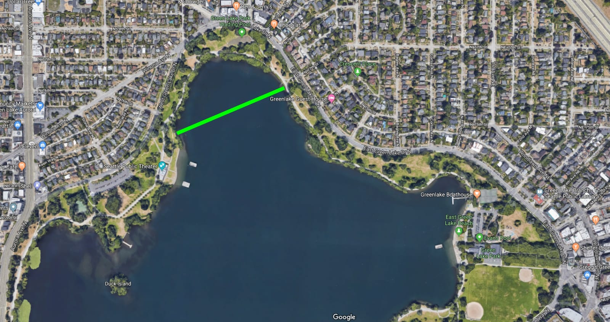

Swim
Open Water Swimming Locations in Seattle
Green Lake
- Location
- Restrooms
- Lifeguard Hours at the east side: May 25 - June 21, 2pm - 7pm weekdays, 11am - 7pm weekends. June 22 - August 25, 12pm - 7pm weekdays, 11am - 7pm weekends
- Lifeguard Hours at the west side: June 22 - September 2 12pm - 7pm weekdays, 11am - 7pm weekends

Lake Washington Locations
Juanita Beach
waverly Beach
Matthews Beach
- Location
- Restrooms
- Lifeguard Hours: June 22 - September 2, 12pm - 7pm weekdays, 11am - 7pm weekends
Magnuson Park
- Location
- Restrooms
- Lifeguard Hours: June 22 - August 25 12pm - 7pm weekdays, 11am - 7pm weekends
Madison Park
- Location
- Restrooms
- Lifeguard Hours June 22 - September 2, 12pm - 7pm weekdays, 11am - 7pm weekends
Denny Blaine
- Location
- No Restrooms
- Nude beach
Madrona Park
- Location
- Lifeguard Hours: May 25 - June 21, 2pm - 7pm weekdays, 11am - 7pm weekends. June 22 - August 25 12pm - 7pm weekdays, 11am - 7pm weekends
Mount Baker Park Beach
Seaward Park
- Location
- Restrooms
- Lifeguard Hours: June 22 - September 2, 12pm - 7pm weekdays, 11am - 7pm weekends
Pritchard Island Beach
- Location
- Lifeguard Hours: June 22 - August 25, 12pm - 7pm weekdays, 11am - 7pm weekends
Puget Sonud Locations
Golden Gardens
Alki
Sammamish
- https://www.yelp.com/search?find_desc=swimming+lakes&find_loc=Sammamish%2C+WA
Other links
- https://www.outdoorproject.com/travel/washingtons-50-best-swimming-holes